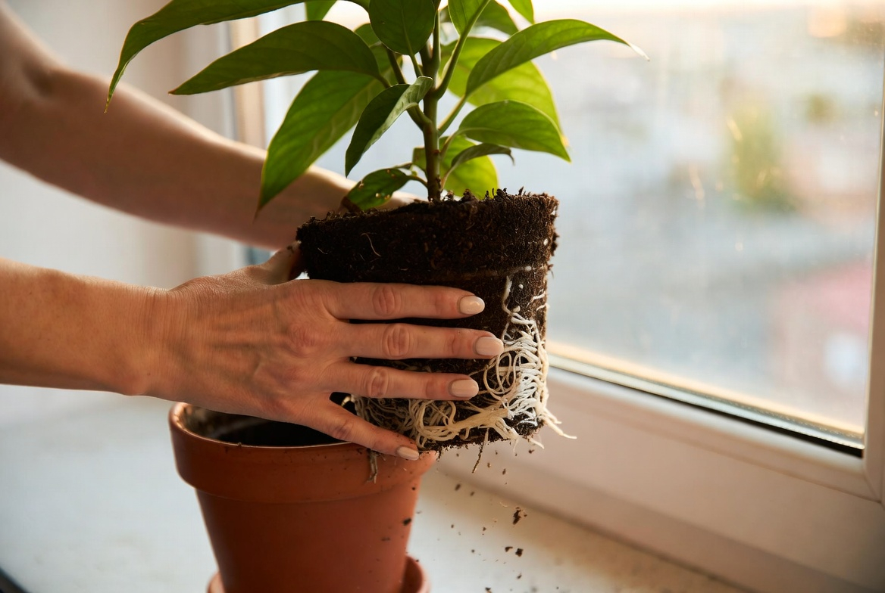

Вы уехали. Может быть, вы давно мечтали об этом. Может быть, это было вынужденным решением. А может — и то, и другое одновременно. Но в какой-то момент вы замечаете: что-то идёт не так внутри. Тревога, усталость, раздражение — и непонятно, от чего.
Почему это не «просто стресс»Что такое тревога эмигранта
Тревога эмигранта — это не слабость и не неблагодарность. Это вполне конкретное психологическое состояние, которое возникает как реакция на многослойную потерю и неопределённость.
Когда вы уезжаете, вы одновременно теряете сразу несколько вещей, которые давали ощущение стабильности: привычное окружение, язык как основу идентичности, понятные социальные роли, чувство «я знаю, как здесь всё устроено». Это много. Даже если вы этого хотели.
Тревога эмигранта — не психическое расстройство. Это нормальная реакция нормальной психики на ненормально сложную ситуацию. Но это не значит, что с ней не нужно работать.
Волны адаптации: что происходит и когда
Психологи описывают адаптацию к эмиграции как U-образную кривую — или даже W-образную, если был возврат на родину. Вот как это чаще всего выглядит на практике.
-
1Эйфория («медовый месяц») Первые недели — всё интересно, всё новое. Кофе в непривычном стакане кажется вкуснее. Это нормально и хорошо — пока оно есть.
-
2Культурный шок и разочарование Реальность начинает не совпадать с ожиданиями. Бюрократия, языковой барьер, одиночество. Всё, что раньше казалось интересным, начинает раздражать.
-
3Горевание и переоценка Приходит понимание: «я потерял кое-что важное». Тоска по прошлому, по людям, по языку, по себе — прежнему. Это этап, который нельзя пропустить.
-
4Постепенная интеграция Новое начинает становиться «своим». Появляются привычки, связи, ориентиры. Это не «стало как раньше» — это что-то новое.
-
5Бикультурная идентичность Вы перестаёте делить мир на «там» и «здесь». Вы — человек, у которого есть и то, и другое. Это не конец пути, но устойчивая точка.
Важно: между этапами нет чёткой границы. Можно находиться на третьем этапе — и вдруг снова скатиться на второй после звонка домой или плохих новостей. Это не регресс, это нормальная нелинейность адаптации.
Как это проявляется
Тревога эмигранта редко выглядит как «я тревожусь». Чаще она маскируется. Вот как она обычно заявляет о себе.
Если вы узнали себя в трёх и более пунктах — это сигнал, что стоит уделить своему состоянию внимание. Не «потерпеть» и не «взять себя в руки», а именно — поработать с этим.
Как работать с тревогой эмигранта
Хорошая новость: тревога эмигранта хорошо поддаётся психологической работе. Вот инструменты, которые я использую в своей практике.
Я консультирую онлайн русскоязычных клиентов из любой страны. Временны́е пояса обсуждаем индивидуально — работаю с разными часовыми поясами. Онлайн-формат для эмигрантов часто особенно ценен: вы говорите на родном языке с человеком, который понимает контекст.

Что вы можете сделать прямо сейчас
До того как начать работу с психологом — или параллельно с ней — несколько вещей, которые реально помогают.
- ✓Назовите то, что потеряли. Напишите список — без оценок, просто перечень. «Я потерял привычный язык вокруг. Запах хлеба из той булочной. Понимание, где север». Горевание начинается с признания потери.
- ✓Отделите тревогу от реальности. Задайте себе вопрос: «Что именно сейчас — в эту минуту — опасно?» Часто тревога эмигранта живёт в будущем или прошлом, а не в настоящем.
- ✓Создайте якоря. Один ритуал, который вы переносите с собой: чашка чая определённого сорта, утренняя прогулка, книга на русском. Якоря дают ощущение непрерывности себя.
- ✓Разрешите себе не любить новое место. Вы не обязаны быть в восторге. Нейтральное «здесь просто другое» — уже честнее и устойчивее, чем вынужденный оптимизм.
- ✓Дозируйте новости и социальные сети. Постоянный мониторинг происходящего «дома» держит нервную систему в режиме хронической угрозы. Установите себе временны́е рамки.
Это когда вы снова чувствуете себя собой — в новом месте.
Когда нужна помощь психолога
Самопомощь работает — но есть состояния, с которыми важно не оставаться один на один.
- ✓Тревога мешает работать, строить отношения, принимать решения
- ✓Прошло больше полугода, а ощущение «я не на месте» не ослабевает
- ✓Появились мысли о возврате как о «бегстве» — а не осознанном выборе
- ✓Отношения с близкими — теми, кто рядом, и теми, кто остался — становятся напряжёнными
- ✓Вы используете алкоголь, еду или работу, чтобы не думать о своём состоянии
- ✓Вы чувствуете, что говорить об этом не с кем — потому что «они не поймут»
Обратиться за помощью — это не признать поражение. Это признать, что вы проходите через что-то по-настоящему сложное — и заслуживаете поддержки.
Поговорим о вашей ситуации
Напишите мне — где вы сейчас находитесь и что происходит. Первая встреча — это разговор, не обязательство. Работаю онлайн с любым часовым поясом.
Написать в Telegram → На русском языке · Онлайн · Любой часовой пояс